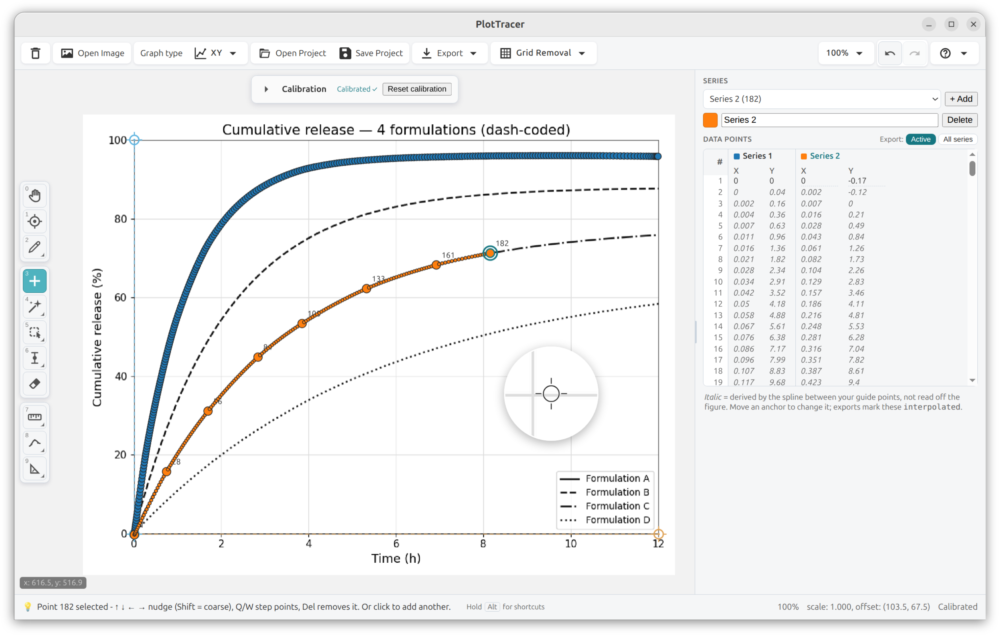
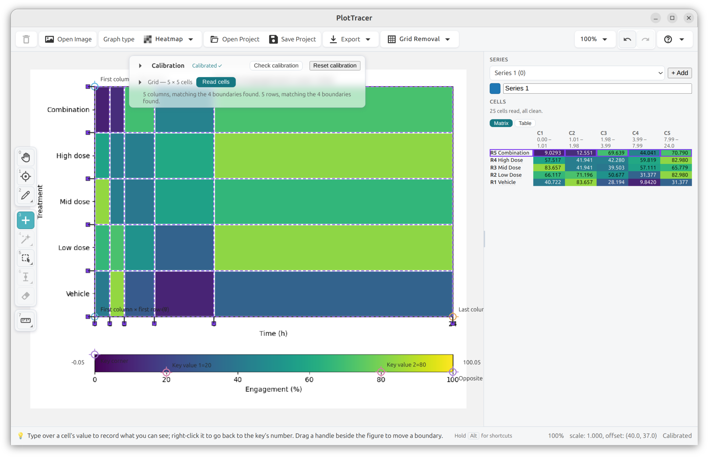
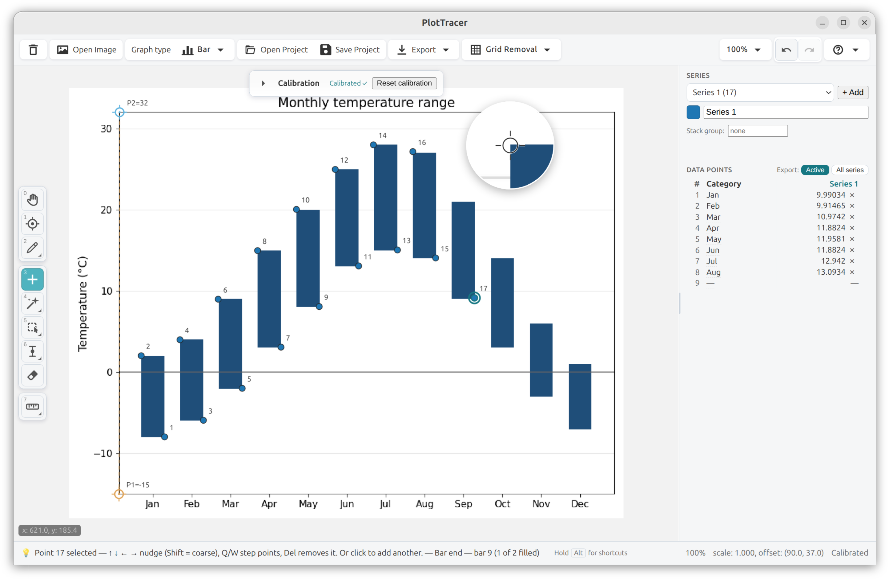
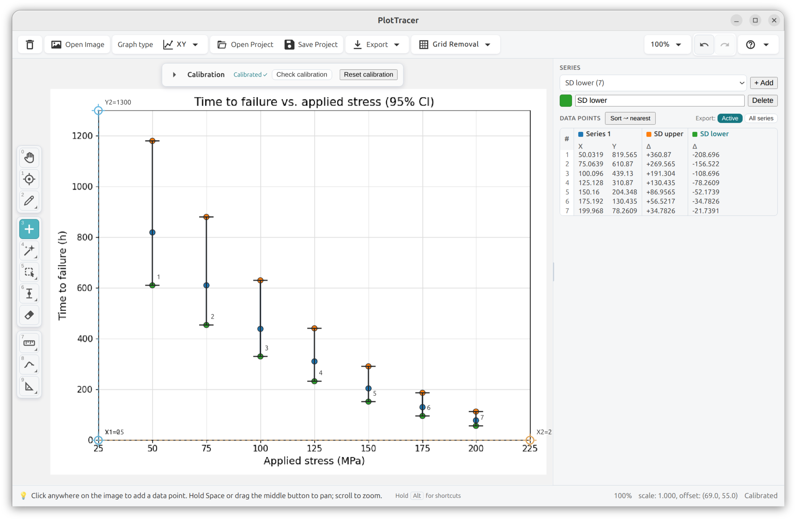
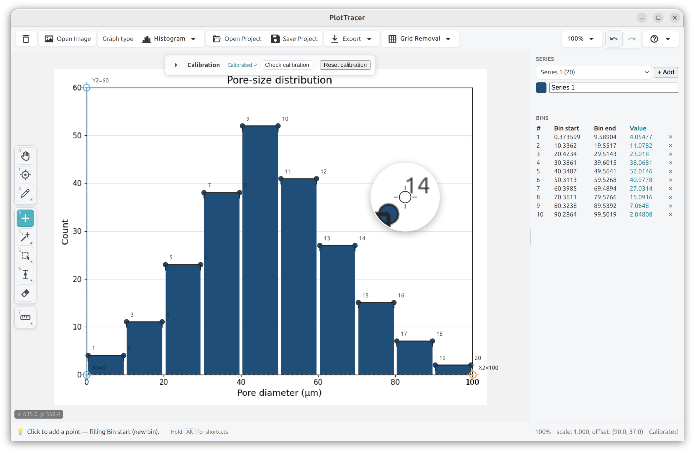
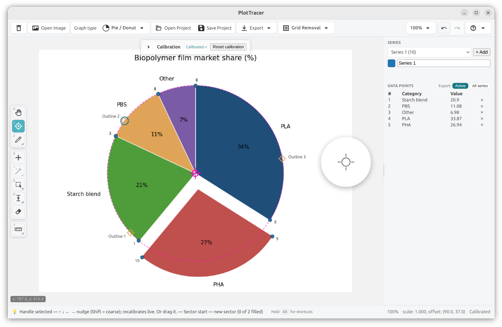
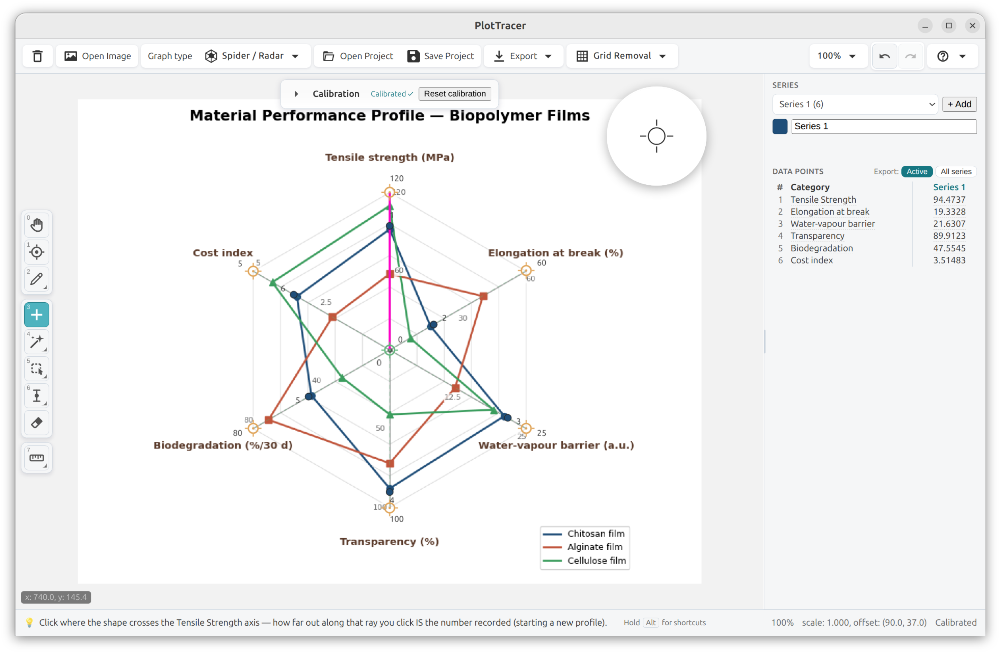
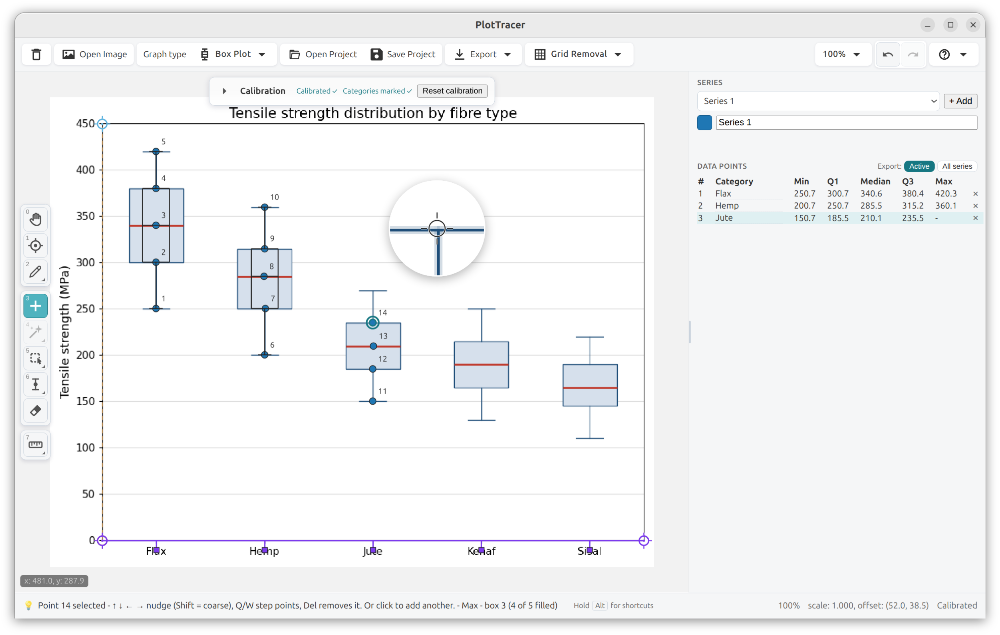
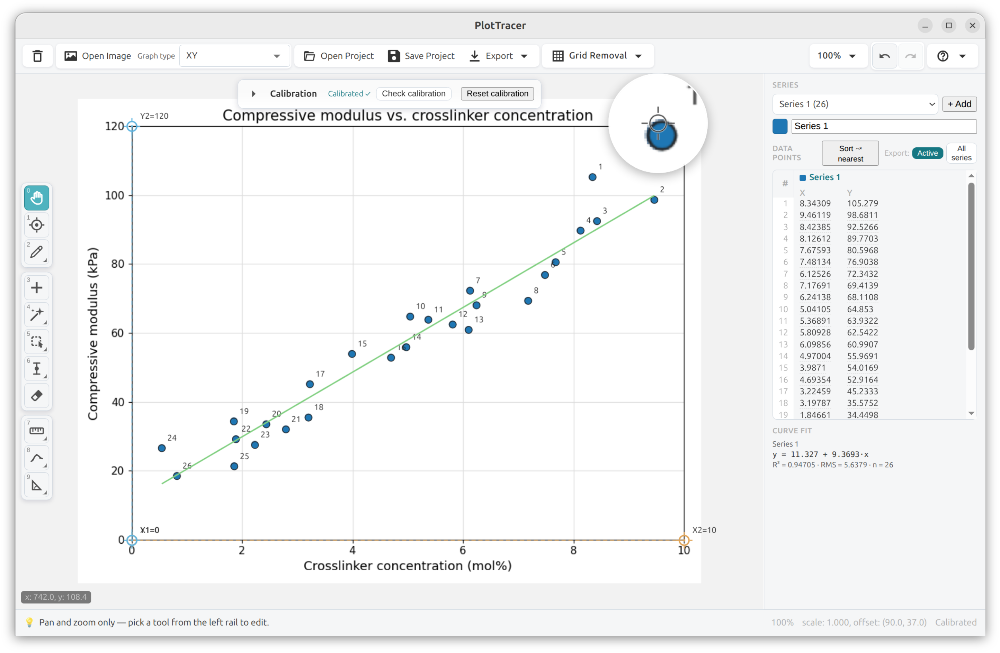

PlotTracer pulls precise numbers out of the figures in scientific papers - stress–strain curves, rheology traces, phase diagrams - across every coordinate system your sources actually use. It records what the figure shows, and nothing it doesn't.
macOS · Windows · Linux - free, offline, no account

Four dash-coded curves that cross - two traced from a handful of guide points, and you can see the points land on the ink.
Mark the axes with a couple of clicks. PlotTracer learns the figure's coordinate system - linear, log, polar, or dates.
Place points with the zoom loupe, or auto-extract a whole curve by colour, fill, or blob detection. Fix anything in a click.
Send clean numbers to CSV, TSV, JSON, Excel, OpenDocument, LaTeX, MATLAB, Python or R - or straight to the clipboard, at the figure's real precision.
Curves that cross and share a colour, heatmaps read cell by cell, floating bars measured end to end, asymmetric error bars, true histogram bins, box plots, pie and donut charts - the same tool, on the plots you meet in practice.








Twelve graph types over eight axis systems - XY curves, bar charts, histograms, box plots, categorical lines, pie and donut charts, heatmaps, ternary phase diagrams, polar plots, spider charts, maps, and circular chart recorders. A bar is recorded as an interval, not a point, so floating and stacked bars keep both ends. Histograms capture true bin edges, and every spoke of a spider keeps its own scale. On a heatmap the colour key is calibrated as a third axis, and each of the other two is independently a category or a value - so a genes-by-samples matrix is calibrated by clicking its edges and counting its categories, never by inventing coordinates it does not print. Error bars are not a graph type here: they are captured on top of whichever series they belong to, asymmetric caps and all.
The repeated loop - calibrate, trace, correct, export - is tuned to disappear. Breadth lives in layers you can reach when you need them, never in the way when you don't.
XY, bar, categorical line, histogram, box plot, polar, spider/radar, pie/donut, heatmap, ternary, map and circular chart recorders - each calibrated the way that figure is actually drawn.
Calibrated from the rim, so the centre is fitted rather than clicked - which is what makes a donut readable at all. A pulled-out wedge is measured about its own tip.
Log (base-10 and natural) and date/time scales, chosen per side - exactly what the figure uses.
Trace a whole series in one pass: by colour, by connected fill, or by blob detection for scatter.
Place each cap where the figure actually draws it - asymmetric and all. The tool says up front that the second cap starts as a mirror rather than a measurement, and which series to pick to move it.
A bar's value is its extent, not a point on it: drag corner to corner and both ends are recorded, nothing averaged away. Grouped, stacked and floating alike.
Records genuine bin edges and heights - the interval a bar spans, not just its centre.
Interpolation-assist traces dashed, overlapping and monochrome curves that colour tools miss - drop a few guide points, a spline fills the rest, even where a curve doubles back.
Distance, angle, area and slope - in the chart's own units or a scale you set from any length.
Polynomial, exponential, power, logarithmic, Gaussian or logistic, plus arc length, area and curvature. A fit that did not settle says so - on screen and in the file.
One calibration, any number of series - each named and colour-coded - captured side by side and exported together.
Open a paper's PDF or multi-page TIFF and capture several figures into one project.
Crop, rotate, flip, fine-deskew and remove grid lines - before or after you capture the figure.
The project bundles the original source PDF or image and records every crop and page - any number traces straight back to its figure.
One Open Project command reads WebPlotDigitizer, Engauge Digitizer and StarryDigitizer files - recognised by what is inside them, not by their extension. Anything it cannot read faithfully it refuses, and says why.
CSV, TSV, JSON, Excel, OpenDocument, LaTeX, MATLAB, Python and R - or straight to the clipboard, at the figure's real precision. Every format says up front what it cannot carry.
Full undo/redo, non-destructive edits, and a project file that round-trips exactly.
macOS, Windows and Linux. No account, no cloud, and your figures never leave your machine.
One click to a spreadsheet, a notebook, or a paper. Every value is rounded to the figure's real resolution - never padded with false precision, never collapsed to zero - with a full-precision switch when you want every digit.
PlotTracer's automatic extraction, scored against two public corpora from the CHART-Infographics competition series using the competition's own metric. Box plots appear in both corpora and are excluded: PlotTracer captures them by hand but does not auto-extract them.
| Chart type | [1] Real figures | [2] Synthetic figures |
|---|---|---|
| Bar | 76.1%n = 6,494 | 35.3%n = 6,739 |
| Line | 69.3%n = 29,688 | 92.0%n = 2,236 |
| Scatter | 91.3%n = 5,409 | 32.1%n = 11,996 |
Share of elements recovered within the competition's tolerance, scored in image space by automatic extraction. PlotTracer 2.3.0 at its default settings (tolerance 60, minimum blob diameter 3), measured 2026-08-26.
Method. These corpora score fully automatic recognition, while PlotTracer is human-in-the-loop, so the two are adjacent rather than equivalent. The table above is the automatic path: the harness supplies the two inputs a person supplies - the plot box, and one colour pick per visible colour - and nothing else; everything after that is the application's own shipped code at its default settings. Scoring is in image space at the competition's tolerance of 5% of the smaller image dimension. An assisted path is measured separately and reported apart, never blended into the table: the same bar figures with the two things a person declares in the calibration walk, the marked category axis and the baseline the bars stand on. It is a ceiling rather than a user's day, because those declarations come from the corpus placed exactly, and it moves bar recall by half a point. Manual capture is measured separately too, in data space: driving the application's own capture session across 344 bar figures from [1], with the calibration recovered from each figure's own tick labels, 80.9% of 5,778 bars read within 1% of the corpus value and 79.4% of figures had every bar within that. 40 figures are excluded, most for carrying no two numeric tick labels to calibrate from. The harness and the exact image lists are at github.com/katalystnord/plottracer-benchmarks.
No account, no cloud, no upload of your figures anywhere. Install the desktop app and start extracting.
Current release: v2.1.0 · AGPL-3.0 · source on GitHub